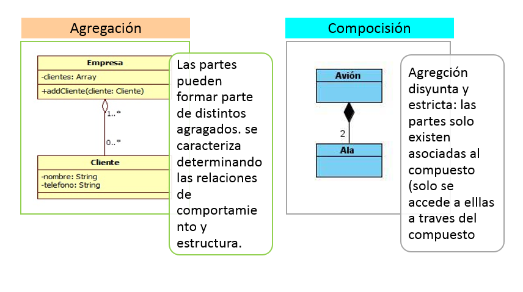
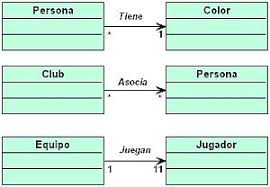

Existen varios tipos de relacións que poden unir aos diferentes obxectos, pero entre elas destacan as relacións de: asociación, agregación/composición, e xeneralización/ especialización.
Relacións de Agregación/Composición:
Neste tipo de relacións un obxecto compoñente intégrase nun obxecto composto.
A diferenza entre agregación e composición é que mentres que a composición enténdese que dura durante toda a vida do obxecto contenedor, na agregación non ten porque ser así.
Exemplo de agregación: un ordenador e os seus periféricos. Os periféricos dun ordenador poden estar ou non, pódense compartir entre ordenadores e non son propiedade de ningún ordenador.
Exemplo de composición: unha árbore e as súas follas. Unha árbore está intimamente ligado ás súas follas. As follas son propiedade exactamente dunha árbore, non se poden compartir entre árbores e cando a árbore morre, as follas fano con el.
No deseño dun sistema este tipo de relacións adóitanse representar como é-parte-de (part-of) ou ten-un(has-a).
Relacións de Xeneralización/Especialización.
É un tipo de relación que xa vimos anteriormente ao falar de Herdanza: ás veces sucede que dúas clases teñen moitas das súas partes en común, o que normalmente se abstrae na creación dunha terceira clase (pai das dúas) que reúne todas as súas características comúns.
Este tipo de relacións é característico da programación orientada a obxectos. En realidade, a xeneralización e a especialización son diferentes perspectivas do mesmo concepto, a xeneralización é unha perspectiva ascendente, mentres que a especialización é unha perspectiva descendente: unha superclase representa unha xeneralización das subclases e unha subclase representa unha especialización da clase superior.
No deseño dun sistema este tipo de relacións adóitanse representar como é-un (is-a), A clase derivada é-un tipo de clase da clase base ou superclase.
Relacións de Asociación.
Serían relacións xerais, nas que un obxecto realiza chamadas aos métodos doutro, interactuando con el.
O establecemento dunha asociación define os roles (papeis) ou dependencias entre obxectos de dúas clases e a súa cardinalidade (multiplicidade); é dicir, cantas instancias de cada clase poden estar implicadas nunha asociación.
No deseño dun sistema as asociacións represéntanse por unha liña que une ás dúas clases e o nome da asociación escríbese na liña. Exemplos (traballa para, emprega a, é colaborador de,...).